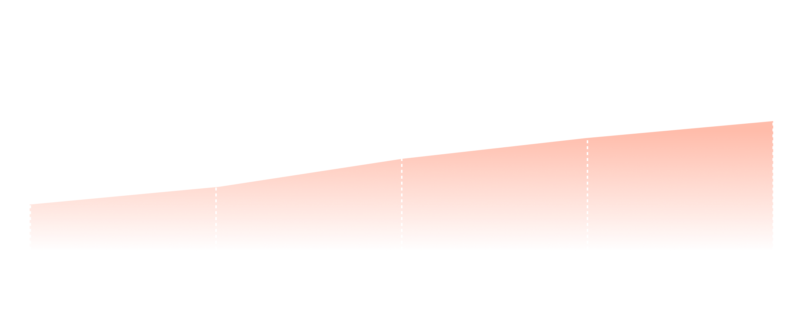
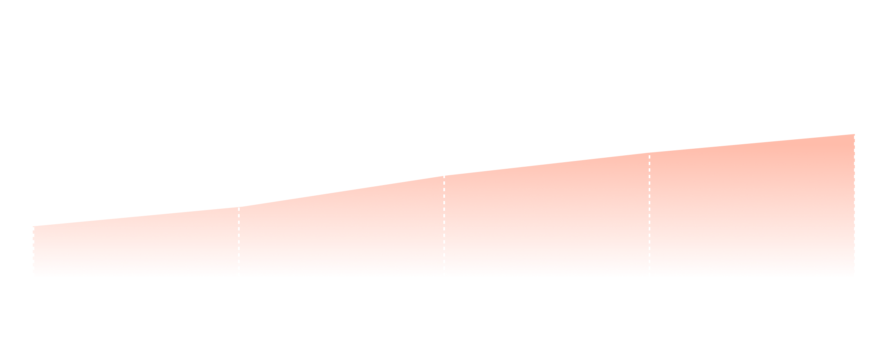
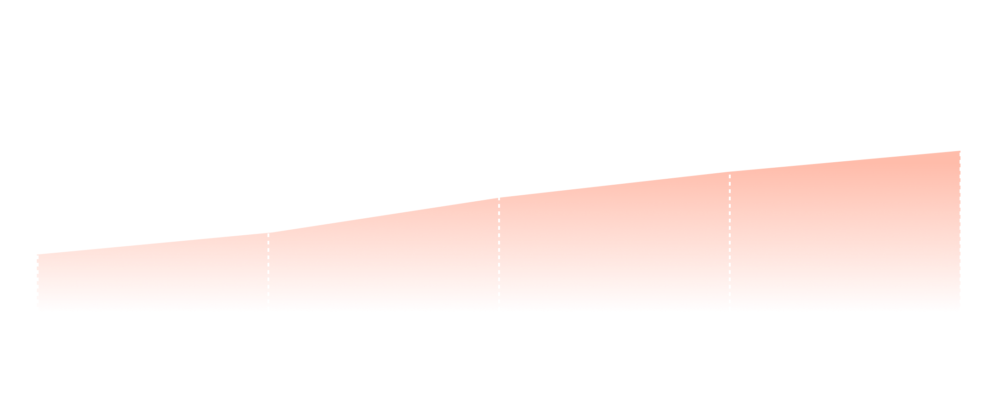

불면증은 지속적이고 만성적인 수면 장애로, 수면의 질과 양이 모두 떨어지는 상태를 의미합니다. 불면증의 원인은 매우 다양하며, 스트레스, 우울증, 불안, 신체 질환 등이 주요 요인으로 작용합니다.
 

21 April 2023
By Kay Crewdson,BBC North West Tonight
A man who first started struggling with insomnia following the death of his week-old daughter 10 years ago says he fears his "body will give out".Council dog handler Dan Hill, 51 and from Warrington, said he typically only sleeps for two to three hours a night.According to the NHS, adults on average need at least seven hours."I think it will kill me and that's properly dramatic I know," he said, adding: "It's something that I've got used to - it's part of my day-to-day."Mr Hill said the situation was "not getting worse [nor] better. This is the hand I've been dealt."And difficult though it may be, at some point the body will give out."Mr Hill said he had experienced severe insomnia since the death of his seven-day-old daughter Isabella in July 2013."Getting to sleep isn't the issue," he told BBC North West Tonight. "I can be awake again within an hour and that could be for any reason."It could be a knock at the door. It could be a dog barking. It could be someone walking past and that's me again for the day."It's not a case of going back to sleep because that's just not possible."Last week, Mr Hill decided to keep a sleep diary.Over those seven days he recorded a total of only 17 hours' sleep.He said he often found himself running on "auto-pilot" during the day."When you get home it's about trying to switch off," he said."But if you've only got six hours before you're going back in again, you can't switch off."Likewise you can't take any sleep remedies because you have to be awake again for the next shift."Mr Hill said he believed insomnia was far more common than most people realised. "Nobody I know has gone to a doctor and said 'you know what, I'm really struggling sleeping' because their lives just don't allow for them to take a tablet and fall asleep for 12 hours because they've got children to get up for school," he said. "They have got things to do and things like that. And I think sleep deprivation is a massive issue. "It has health implications. It has working life implications, relationships especially. It needs addressing."
경기일보|박채령기자|24.03.31
31일 국민건강보험공단에 따르면 경기도에서 불면증으로 병원을 찾은 환자는 지난 2022년 29만805명, 2021년 27만2천334명으로 증가하고 있다. 지난해는 6월 기준 21만1천922명으로, 2022년 같은 기간과 비교했을 때 이미 절반을 뛰어넘어 환자 수가 급증했을 것으로 추정된다.불면증 환자가 지불한 진료비 또한 지난 2022년 769억8천663억8천만원, 2021년 678억9천780만4천만원으로 증가했다. 지난해 진료비 역시 6월 기준 441억5천578억8천만원으로 전년 보다 증가했을 것으로 예상된다. 이처럼 불면증이 증가한 원인은 학교와 직장 내 심화되는 경쟁, 이로 인한 업무나 학업의 압박, 취업난과 직장 생활 등에서 비롯되는 스트레스, 과도한 카페인 섭취와 지나친 디지털 기기 사용 등 다양하다. 전문가들은 스트레스 요인을 제거할 수 없는 환경이라면 불면증 개선을 위해 잠자기 전 뇌의 각성 상태를 최대한 줄이는 노력이 필요하다고 입을 모은다. 임성철 가톨릭대학교성빈센트병원 신경과 교수는 “스트레스 상황에서 호르몬 분비로 인해 과각성 상태가 지속되면 잠을 자지 못하게 된다”며 “스트레스 누적으로 잠을 못 자는 날이 많아지면 수면을 해야 한다는 강박 때문에 더 잠들지 못하고, 이런 불안감이 쌓여 만성 불면이 될 수도 있다”고 말했다. 이어 임 교수는 “힘들더라도 일정한 수면패턴을 유지하는 것이 중요하다”며 “정해진 취침 시간에 잠들기 정 힘든 경우에는 일정한 수면패턴이 맞춰질 때까지 약간의 수면제를 복용하거나 온수욕, 또는 명상을 통해 뇌의 각성 상태를 최대한 완화시켜 일시적인 불면이 만성 불면으로 가지 않도록 하는 것이 중요하다”고 조언했다. 양주시 고암동에 사는 30대 여성 김문영씨(가명)는 요즘 하루 4시간도 자지 못한다. 육아와 직장 스트레스가 겹쳐 불안감이 밤에도 이어지기 때문이다. 지난 1월 서울 광화문에 있는 회사에 취직을 하며 통근 압박까지 더해져 걱정과 불안에 잠을 설치다 보면 날을 새기 일쑤다. 김 씨는 “잠을 못 자 예민해져 가족들에게 화를 내기도 한다”며 괴로운 얼굴을 했다. 성남시 분당구에 사는 마케팅 회사 직원 이윤호씨(가명·33) 또한 요즘 불면증에 시달리고 있다. 직장 내 동료들과 갈등을 겪기 시작한 후부터 밤에 잠이 오지 않는다. 낮에 깨어있기 힘들어 커피를 마실수록 밤에 각성 상태가 지속돼 더욱 잘 수 없는 악순환이 반복되고 있다. 불면증으로 병원을 찾는 경기도민이 급증하고 있다. 불면증은 낮에 일터에서 생산성을 낮추고 식욕 조절 호르몬에도 영향을 미쳐 체중 변화와 건강 이상을 초래하는 등 삶의 질을 떨어트릴 수 있다는 지적이다.
[헬스]
최근 들어 숙면을 취하지 못하는 ‘수면 장애’ 환자가 급증하고 있다. 국민건강보험공단이 공개한 2018~2022년 수면 장애 환자 건강보험 진료 현황에 따르면 지난해 수면 장애로 병원을 찾은 환자는 109만8819명으로 4년 전인 2018년 85만5025명보다 28.5% 늘었다. 연령대별 환자 비율은 60대가 23%(25만2829명)로 가장 많았고, 이어 50대 18.9%(20만7698명), 70대 16.8%(18만4863명) 순으로 나타났다
불면증은 지속적이고 만성적인 수면 장애로, 수면의 질과 양이 모두 떨어지는 상태를 의미합니다. 불면증의 원인은 매우 다양하며, 스트레스, 우울증, 불안, 신체 질환 등이 주요 요인으로 작용합니다.

집중력, 기억력, 문제 해결 능력 등이 감소
실수와 사고 발생 위험이 높아짐
짜증, 우울, 불안 등 부정적인 감정이 증가
감정 조절 능력이 저하되어 과민해짐
면역력 저하로 감염 위험이 높아짐
대사 및 호르몬 불균형으로 체중 증가, 당뇨 등 질환 발생
졸음운전, 작업 중 사고 발생 확률이 높아짐
주의력 저하로 인한 안전사고 위험 증가
피로감과 에너지 부족으로 일상 활동이 어려워짐
사회생활과 대인관계에도 부정적인 영향을 줌
부작용에 대한 우려
의존성과 내성 발생
다른 치료법 선호
자연스러운 수면 방해

약물 남용의 경계심

기억력 감퇴, 인지기능 저하

‘Abysseden’은 청해파리목 해파리에서 추출한 RFamide 펩타이드를 주원료로 사용합니다.
RFamide는 해파리의 자연적인 신경전달물질로, 보다 생체 친화적이며 합성 화학물질에 비해
부작용 가능성이 낮습니다.
일반적으로 독성이 약한 청해파리목 해파리에서 추출하여 보다 안전합니다.
01 새로운 작용 기전
해파리 RFamide 펩티드는 포유류의 RFamide 관련 펩티드(FRPs)와 구조적 유사성을 가지며, FRPs는 시상하부에서 수면-각성 주기 조절에 관여합니다. 기존 수면유도제와 다른 새로운 작용 기전을 통해 불면증 치료 효과를 나타낼 수 있습니다.
02 선택성 및 특이성 증대
해파리 RFamide 펩티드는 특정 수용체에 선택적으로 작용할 가능성이 있습니다. 이를 통해 수면 유도에 직접 관련된 신경회로를 표적화하여 효과를 높이고 부작용을 최소화할 수 있습니다.
03 효능 증대
해파리 RFamide 펩티드가 기존 수면유도제보다 강력한 수면 유도 효과를 나타낼 가능성이 있습니다. 적은 용량으로도 효과적인 수면 개선 효과를 기대할 수 있습니다.
04 부작용 및 의존성 감소
RFamide 펩티드는 내인성 물질과 유사한 구조를 가지므로, 외인성 약물에 비해 부작용 발생 위험이 낮을 수 있습니다. 의존성 및 내성 발생 가능성도 상대적으로 적을 것으로 기대됩니다.
빠른 약효 발현
간편한 사용과 휴대성
위장관 부작용 최소화
간 대사 우회
투여 용량 조절 용이
중추신경계 직접 전달
순응도 개선

Abysseden
안녕하세요, IT 업계에서 일하는 직장인입니다. 야근과 스트레스로 만성 불면에 시달리다가 '어비세덴' 비강 스프레이를 접하게 되었어요. 일단 휴대하기 간편해서 출장이 잦은 저에게 안성맞춤이에요. 호텔에서도 간단히 스프레이하고 쉽게 숙면을 취할 수 있거든요. 덕분에 장거리 비행 후에도 시차 적응이 빨라졌어요. 또 저는 알레르기 비염이 있어서 코 점막이 예민한 편인데, '어비세덴'은 전혀 자극이 없더라고요. 안전하게 장기간
사용할 수 있어서 더 믿음이 가요. 불면증 때문에 업무 능률이 떨어지는 분들에게 강력 추천합니다. '어비세덴' 덕분에 스트레스는 줄이고 업무 효율은 높일 수 있게 되었어요. 정말 삶의 질이 달라졌답니다!
Abysseden
저는 갱년기 증상으로 불면증이 심했던 주부입니다. 호르몬제나 수면제에 의존하고 싶지 않아서 고민하던 차에 '어비세덴' 비강 스프레이를 알게 되었어요. 처음에는 약물을 코로 투여하는 게 낯설었는데, 사용해보니 전혀 불편함이 없더라고요. 오히려 위에 부담이 없어서 더 좋았어요. 무엇보다 숙면을 취하고 나면 피부 건강까지 좋아지는 걸 느꼈답니다. 갱년기 증상으로 고민하는 친구들에게도 '어비세덴'을 적극 추천하고 있어요. 호르몬 균형을 맞추면서 숙면을 돕는 일석이조 효과가 있는 것 같아요.
Abysseden
안녕하세요, 불면증으로 고생하던 대학생 입니다. 시험 스트레스로 잠을 이루지 못해 힘들었는데, '어비세덴' 비강 스프레이를 만난 후 정말 숙면을 취할 수 있게 되었어요. 사용법도 간단해서 좋아요. 잠들기 전에 코에 스프레이를 뿌리면 금세 졸음이 밀려와서 쉽게 잠에 들 수 있거든요. 아침에 일어나도 개운하고 두통 없이 상쾌해서 강의 집중력도 높아졌어요. 친구들에게도 '어비세덴'을 추천했는데, 다들 저처럼 수면의 질이 향상되었다고 하더라고요. 부작용 걱정 없이 건강한 숙면을 취할 수 있어서 정말 만족스러워요.
- 본 제품은 의사의 처방에 의해 사용해야 하는 수면유도제입니다.
- 사용 전 반드시 첨부 설명서를 읽고 이해하시기 바랍니다.
- 다른 약물과의 상호작용 가능성이 있으므로, 복용 중인 약이 있다면 의사에게 알리십시오.
1. 코를 깨끗이 풀어낸 후 사용하는 것이 좋습니다.
2. 스프레이를 용기에서 꺼내 수직으로 잡습니다.
3. 고개를 약간 숙이고, 스프레이 노즐을 코 끝에서 약 1cm 떨어뜨려 한쪽 콧구멍에 삽입합니다.
4. 반대쪽 콧구멍은 손가락으로 막습니다.
5. 스프레이를 눌러 약물을 분사하면서 동시에 숨을 들이쉽니다.
6. 같은 방법으로 반대쪽 콧구멍에도 사용합니다.
7. 사용 후에는 코를 풀지 말고 약 1분간 그대로 유지합니다.
- 취침 전 30분 내에 1회 1푸쉬씩 양쪽 콧구멍에 사용합니다.
- 필요시 의사와 상담하여 1회 2푸쉬까지 늘릴 수 있으나, 절대 권장량을 초과하지 마십시오.
- 복용을 잊었더라도 다음 날 아침에 보충하지 말고 다음 취침 시간에 평소 용량을 사용하십시오.
- 매 사용 후 노즐을 티슈로 닦아내고 뚜껑을 닫아 청결히 보관합니다.
- 노즐이 막힌 경우 뜨거운 물에 몇 분간 담가두었다가 완전히 말립니다.
- 어지러움, 두통 등의 부작용이 나타나면 의사와 상담하십시오.
- 임신 중이거나 수유 시에는 반드시 의사와 상담 후 사용하십시오.
- 어린이의 손이 닿지 않는 곳에 보관하십시오.